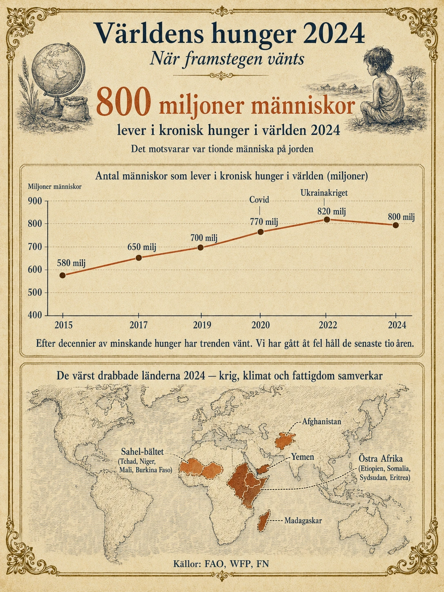

Världens hunger 2024
— När framstegen vänts —
En vändning vi inte väntat oss
Under decennier var berättelsen om världens hunger en hoppfull sådan. Andelen och antalet människor som led av kronisk hunger sjönk år efter år. På 1970-talet led omkring 30 procent av världens befolkning av hunger. På 1990-talet 19 procent. På 2000-talet 13 procent. På 2010-talet närmade vi oss 10 procent. FN siktade på att utrota hunger som "global utmaning" till 2030.

Sedan vände det. Sedan ungefär 2015 har antalet hungrande i världen ökat. Trenden som vi trodde var oåterkallelig — att hunger gradvis skulle försvinna från jorden — har brutits.
Idag, 2024, lever omkring 800 miljoner människor i kronisk hunger. Det är var tionde människa på jorden. Det är fler än 2015. Och experter varnar att antalet kan fortsätta stiga om inget förändras.
Detta är en av samtidens viktigaste men minst rapporterade utvecklingar. Och den är värd att förstå.
Vad menas med hunger?
Innan vi går djupare behöver vi förstå begreppet. Hunger i den vetenskapliga och politiska meningen är inte att vara sugen på en mellanmål. Det är något allvarligare.
FN:s livsmedelsorgan FAO (Food and Agriculture Organization) definierar kronisk undernäring — det vi kallar "hunger" här — som ett tillstånd där en människa under längre tid inte får tillräckligt med energi och näring från sin mat för att leva ett hälsosamt och aktivt liv. Det handlar alltså inte om att missa en måltid, utan om att vara konstant underförsedd med mat under månader eller år.
Konsekvenserna är allvarliga. Hunger leder till tillväxthämning hos barn — de växer inte normalt fysiskt och mentalt. Hunger försvagar immunförsvaret, så att vanliga sjukdomar blir dödliga. Hunger gör det omöjligt att koncentrera sig och lära, så att barn som hungrar har svårt att klara skolan. Hunger leder ofta till specifik näringsbrist — för lite järn, för lite vitamin A, för lite jod — som kan orsaka blindhet, missfall, döda foster och andra allvarliga skador.
Hunger är därmed inte bara en momentan svält — det är en kronisk skadekedja som följer människor genom hela livet.
Varför vänder trenden?
Det finns inget enskilt svar på varför hungerns minskning vänts till ökning. Det är flera saker som händer samtidigt.
1. Klimatförändringar
Detta är troligen den största underliggande faktorn. Klimatförändringar slår direkt mot jordbruket i fattiga länder.
Torkan i Östafrika har varit den värsta på 40 år. Etiopien, Somalia, Kenya och Sydsudan har haft fem misslyckade regnsäsonger i rad. Boskap dör. Skördar misslyckas. Människor — främst kvinnor och barn — vandrar långa sträckor för att hitta vatten och mat.
Sahel-bältet — Tchad, Niger, Mali, Burkina Faso, Mauretanien — kämpar med växande ökenspridning. Områden som för 30 år sedan kunde odlas är nu öken. Boskap har inte längre tillräckligt med betesmarker.
Översvämningar i Bangladesh, Pakistan och Indien har förstört miljontals tunnland åkermark. Pakistans översvämningar 2022 påverkade 33 miljoner människor och förstörde stora delar av landets jordbruk.
Stigande globala temperaturer påverkar grödor överallt — vete växer sämre vid högre temperaturer, ris kräver mer vatten, många grödor är känsliga för värmebölja vid blomningstiden.
2. Krig och konflikter
Krig är en av de starkaste drivkrafterna för hunger.
Ukrainakriget sedan 2022 har haft global påverkan. Ukraina och Ryssland står tillsammans för 30 procent av världens veteexport. När exporten störs stiger priserna globalt. Länder som Egypten, Marocko, Libanon och Jemen — som importerar mycket av sitt vete från regionen — har drabbats hårt.
Inbördeskriget i Jemen sedan 2015 har skapat det som FN kallar "världens värsta humanitära katastrof". 17 miljoner människor i Jemen lider av matosäkerhet, varav flera miljoner barn är allvarligt undernärda.
Konflikterna i Sudan, Etiopien, Syrien, Myanmar och Demokratiska Republiken Kongo har alla skapat humanitära katastrofer. När jordbruk förstörs, vägar avskärs och människor flyr blir det omöjligt att producera och distribuera mat.
Krig och mat hänger ihop på flera sätt. Krig förstör jordbruk direkt. Krig avskär matdistribution. Krig tvingar bönder att fly. Krig drar pengar från offentlig service till militära utgifter. Och krig skapar långsiktig skada — bönder som tvingats fly i 10 år förlorar kunskap, mark, djur och resurser som inte kommer tillbaka när freden återvänder.
3. Stigande matpriser
De globala matpriserna har stigit kraftigt sedan 2020. Pandemin störde leveranskedjor. Ukrainakriget störde spannmålshandel. Klimat påverkade skördar. Energipriser har stigit, vilket gör jordbruket dyrare (gödsel, transporter, bevattning).
För fattiga länder och fattiga människor är detta katastrofalt. En familj som spenderar 60-70 procent av sin inkomst på mat har inte utrymme för dramatiska prishöjningar. När mat blir 20 procent dyrare måste de minska sin matkonsumtion — eller skära ner på andra grundläggande behov som mediciner eller skolavgifter.
4. Pandemin
Covid-19-pandemin var en katastrof för många av världens fattiga. Inkomster försvann när ekonomier stannade. Skolor stängde — och med dem skolmåltidsprogrammen som för många fattiga barn är dagens enda näringsrika måltid. Hälsosystem belastades, och förebyggande hälsoinsatser för fattiga prioriterades ner.
Effekterna har inte gått tillbaka. Återhämtningen från covid har varit ojämn — rika länder har återhämtat sig, men många fattiga länder har inte. Och inflationseffekterna av pandemin lever vidare.
Var är hungern värst?
Hunger är inte jämnt fördelad. Den koncentreras till specifika regioner.
Östafrika — Etiopien, Somalia, Sydsudan, Eritrea — har idag de högsta andelarna hungrande i världen. Krig, klimat och fattigdom samverkar.
Sahel-bältet — Tchad, Niger, Mali, Burkina Faso — kämpar med ökenspridning, terrorism och statliga sammanbrott.
Jemen har världens kanske värsta humanitära kris. Flera miljoner barn är allvarligt undernärda.
Afghanistan sedan talibanernas återtagande av makten 2021 — kombination av krig, sanktioner, klimatkatastrofer och politiskt sammanbrott.
Madagaskar har haft flera år av extrem torka och hungersnöd, delvis kopplad till klimatförändringar.
I dessa områden räcker det inte att tala om "fattigdom" — det är genuin hungersnöd där människor dör av brist på mat. WFP, FN:s livsmedelsprogram, arbetar med att leverera nödhjälp till tiotals miljoner människor i dessa regioner.
Vad kan göras?
Lösningarna är kända — men kostsamma och komplicerade.
Akut nödhjälp — mat, vatten och medicinsk vård till de mest drabbade. Detta är vad organisationer som WFP, Röda Korset och Läkare utan Gränser arbetar med dagligen. Det räddar liv men löser inte grundproblemet.
Klimatanpassat jordbruk — torktåliga grödor, bättre vattenförvaltning, jordbruksteknik som funkar i förändrat klimat. Detta är långsiktigt avgörande.
Bättre matdistribution — det produceras tillräckligt med mat i världen totalt sett, men distributionen är ojämn. Frågan är hur mat når dit den behövs.
Fred och konfliktlösning — utan fred finns inget effektivt jordbruk. Den största insatsen för att minska hunger i regioner som Jemen och Sudan vore att avsluta krigen.
Investeringar i fattiga länders egen jordbruksproduktion — istället för att förlita sig på import. Detta kräver kapital, kunskap och politisk vilja.
Minskad matsvinn i rika länder. Vi i den rika världen slänger en stor del av all mat som produceras. Om detta minskades skulle priserna sjunka och mer mat skulle finnas tillgängligt.
Vad det säger oss
Världens hunger är en av samtidens viktigaste och minst rapporterade utvecklingar. Den visar att framsteg inte är garanterade. När vi tror att vi besegrat ett globalt problem kan det vända — och framstegen kan rasera.
För eleverna är detta en viktig pedagogisk insikt. Världen är komplex. Den blir bättre på vissa sätt och sämre på andra. Den positiva berättelsen om världens utveckling sedan 1990 är sann — men den hänger på att vi fortsätter att arbeta för förbättring. Klimatkrisen, krig och politisk instabilitet kan rasera det vi byggt upp.
Och hungern är en av de mest synliga indikatorerna på detta. Den växer just nu — efter decennier av minskning. Det är en larmsignal om att världen är på väg åt fel håll på ett område som vi trodde vi hade fixat.
Att förstå detta — och att inte glömma det när nyhetsflöden tystnar — är en del av att vara en informerad samhällsmedborgare i 2000-talet.
Djupdykning till avsnitt 6 (Befolkning och resurstillgång). Fördjupningsnivå.